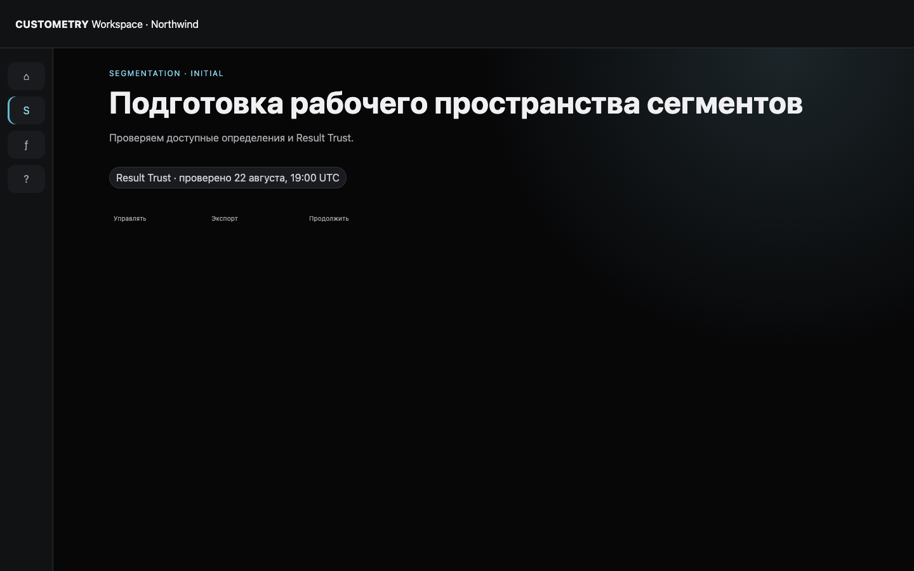
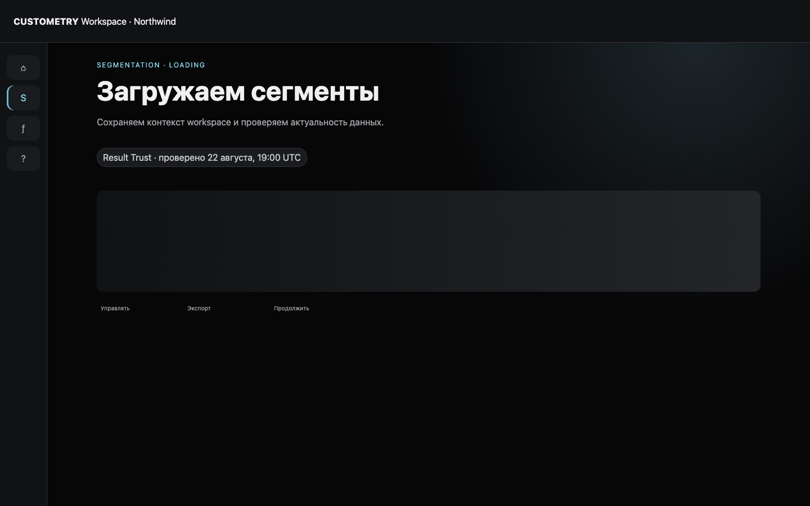
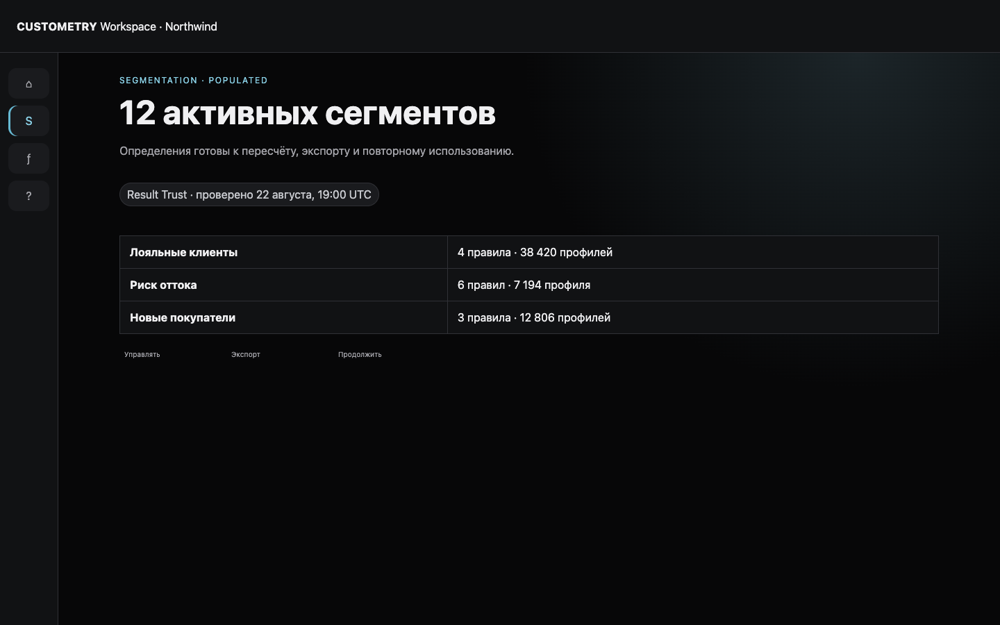
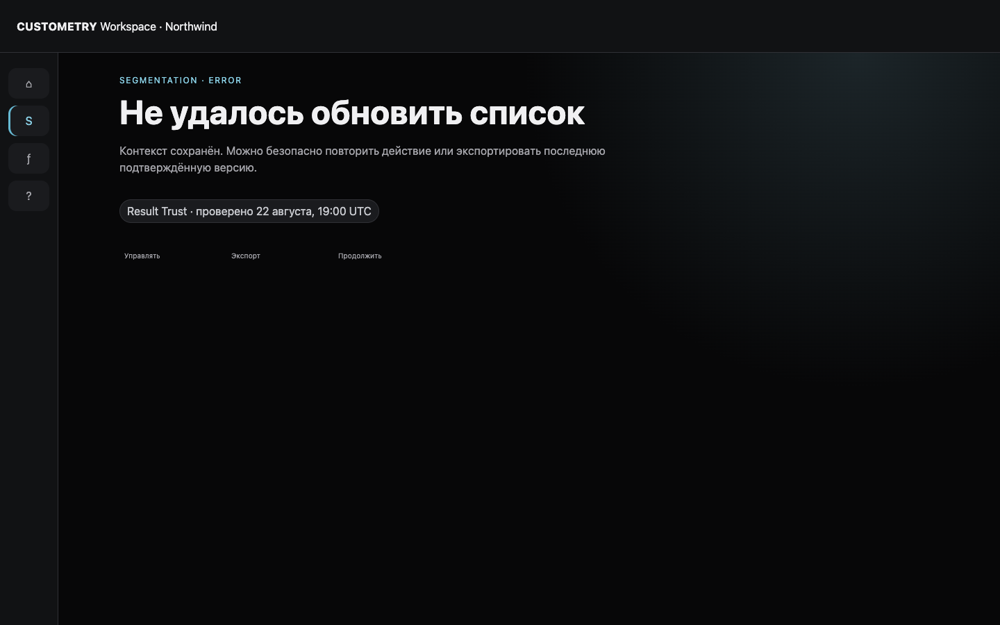
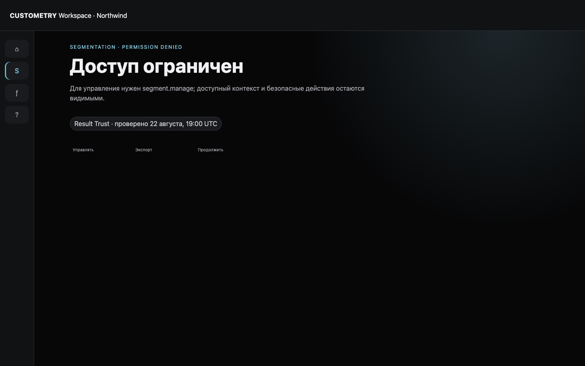
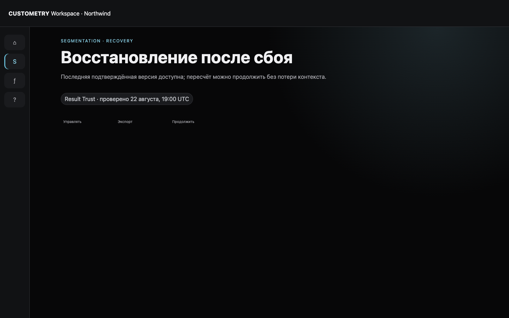

Начальное состояние

Экран и действия проверены
Visual language и responsive-Web проверены
Шесть обязательных состояний списка сегментов, безопасные действия управления/экспорта/продолжения и Result Trust. Responsive Web проверяется на 768, 1440 и 1920 px; mobile-specific композиция не входит в scope.





